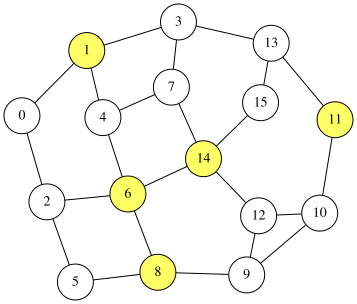

Minimum Dominating Set Problem
A dominating set of an undirected graph $G=(V,E)$ is a subset $S\subseteq V$ such that every node $u\in V$ is either in $S$ or adjacent to a vertex in $S$.
Let $N(u)={v\in V\mid (u,v)\in E}$ be the set of neighbors of $u\in V$, and let $N[u]={u}\cup N(u)$ be the closed neighborhood of $u$. Then $S$ is a dominating set if and only if
\[\begin{aligned} V = \bigcup_{u\in V} N[u]. \end{aligned}\]The minimum dominating set problem aims to find the dominating set with the minimum cardinality. on an $n$-node graph $G=(V,E)$ with nodes labeled $0,1,\ldots,n−1$, we introduce $n$ binary variables $x_0, x_1, \ldots, x_{n-1}$ where $x_i=1$ if and only if node $i$ is included in the dominating set $S$.
We will show two formulations:
- HUBO formulation: the expresion may includes higher-dgree terms.
- QUBO formulation: the expression is quadratic, but auxiary variables are used.
HUBO formutlation of the minimum dominating set problem
For each node $i\in V$, the following condition must be satisfied for all node $i$:
- $x_j=1$ for some $j\in N[i]$ (i.e., node $i$ is dominated). Thus, we define the constraint as:
The degree of the term for node $i$ is $∣N[i]∣$, so the constraint may not be quadratic.
The objective is to minimize the number of selected nodes:
\[\begin{aligned} \text{constraint} = \sum_{i-0}^{n-1} x_i \end{aligned}\]Finally, the expression $f$ as:
\[\begin{aligned} f &= \text{objective} + (n+1)\times \text{constraint} \end{aligned}\]The penalty coefficient $n+1$ isis a safe choice to prioritize satisfying the dominating-set constraints over minimizing the objective.
QUBO++ program for the HUBO formulation
The following QUBO++ program finds a solution for a graph with $N=16$ nodes:
#include "qbpp.hpp"
#include "qbpp_easy_solver.hpp"
#include "qbpp_graph.hpp"
int main() {
const size_t N = 16;
std::vector<std::pair<size_t, size_t>> edges = {
{0, 1}, {0, 2}, {1, 3}, {1, 4}, {2, 5}, {2, 6},
{3, 7}, {3, 13}, {4, 6}, {4, 7}, {5, 8}, {6, 8},
{6, 14}, {7, 14}, {8, 9}, {9, 10}, {9, 12}, {10, 11},
{10, 12}, {11, 13}, {12, 14}, {13, 15}, {14, 15}};
std::vector<std::vector<size_t>> adj(N);
for (const auto& e : edges) {
adj[e.first].push_back(e.second);
adj[e.second].push_back(e.first);
}
auto x = qbpp::var("x", N);
auto objective = qbpp::sum(x);
auto constraint = qbpp::toExpr(0);
for (size_t i = 0; i < N; ++i) {
auto t = (1 - x[i]);
for (size_t j : adj[i]) {
t *= (1 - x[j]);
}
constraint += t;
}
auto f = objective + (N + 1) * constraint;
f.simplify_as_binary();
auto solver = qbpp::easy_solver::EasySolver(f);
solver.time_limit(1.0);
auto sol = solver.search();
std::cout << "objective = " << objective(sol) << std::endl;
std::cout << "constraint = " << constraint(sol) << std::endl;
qbpp::graph::GraphDrawer graph;
for (size_t i = 0; i < N; ++i) {
graph.add_node(qbpp::graph::Node(i).color(sol(x[i])));
}
for (const auto& e : edges) {
graph.add_edge(qbpp::graph::Edge(e.first, e.second));
}
graph.write("dominatingset.svg");
}
This program first builds the adjacency list adj from the edge list edges, where each adj[i] stores the neighbors of vertex i.
It then constructs constraint, objective, and f according to the HUBO formulation.
The Easy Solver is applied to f to obtain a solution sol.
The values of objective and constraint for sol are printed, and the resulting graph is saved as dominatingset.svg, where the selected vertices are highlighted.
This program produces the following output:
objective = 5
constraint = 0
The image file stores the following image:

QUBO formulation and the QUBO++ program
A node $i$ is dominated if $N[i]\cap S$ is not empty. Using binary variables $x_i$, this condition is equivalent to the following inequality:
\[\begin{aligned} \sum_{j\in N[i]}x_j &\geq 1 \end{aligned}\]In QUBO++ notation, we can express the dominating-set constraints by summing the penalty expressions:
\[\begin{aligned} \text{constraint} &= \sum_{i=0}^{n-1} \bigl(\sum_{j\in N[i]}x_j \geq 1\bigr) \end{aligned}\]The objective and f can be defined in the same way as the QUBO formulation.
The constraint above can be described as a QUBO++ program as follows:
auto constraint = qbpp::toExpr(0);
for (size_t i = 0; i < N; ++i) {
auto t = qbpp::toExpr(x[i]);
for (size_t j : adj[i]) {
t += x[j];
}
constraint += 1 <= t <= +qbpp::inf;
}
In this code, t stores the expression
and the range operator creates a penalty expression for
\[1\leq \sum_{j\in N[i]}x_j \leq +\infty,\]which takes the minimum value 0 if and only if the inequality is satisfied.
By minimizing f, the program finds a minimum dominating set.